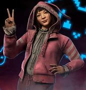

Since I started attending GCU I have grown as a person. I started trying new things like I said I would, I have hiked and tried rock climbing. Rock climbing is really difficult and I couldn't get into it so I stuck with hiking. I hiked the highest summit in Arizona as my first hike. I think my previous experience as a runner helped me. I picked up frisbee again. I used to play ultimate frisbee a lot in middle school, those friends stayed in Washington. Playing frisbee is really fun and means a lot to me. I like to visit Washington whenever I can so I do check the academic calendar a lot. The weather is a little bit different from Arizona. One of my favorite things is running in the rain.
This character is from a video game I used to play a lot. Its called "Dead by Daylight"
Aside from all those activities I like to play video games. I used to play a lot of Overwatch, Rocket League, and Rainbow Six siege on playstation. I am making a transition to PC because I want to try out for the Overwatch team. I am playing a bit of PC games recently like Valorant, League of Legends and TFT. My gamertags are:
| Name | Age | |
|---|---|---|
| Marvin Garcia | marvinmgg@icloud.com | 18 |
This is the cities I have lived in and for how many year. I was born in California and have lived in Washington since I was 4 and moved down to Arizona for college.
| City | Age |
|---|---|
| Washington | 13 |
| California | 4 |
| Phoenix | 1 |
The MP3 file leads to a soundtrack that is meant for a menu in the middle of the game when you pause and you’re taking a break. The guitar adds smooth calming music because the drum set is the upbeat part and together they work in harmony to comfort the player. The inspiration comes from old nintendo 64 games that I used to play. (starts at 10 seconds)
Check out the soundtrack